Tonos Expressive - accordion style comparison
Historical comparison: these images precede the later header-geometry, chevron, divider and Food-action corrections. Open the latest finishing-pass captures.
Side-by-side screenshots of the five areas updated with inset accordion headers and more comfortable expanded content.
Before: the original Pixel 7 baseline from checkpoint a8dff3e. After: the updated build on the same device, captured during the recent refinement and comparison. Scroll positions differ slightly in some pairs. Click any image to open the full-size screenshot. The existing Food Save and Cancel overlay appears in both versions.
Plan Progression editor
Attach a progression action
Light mode


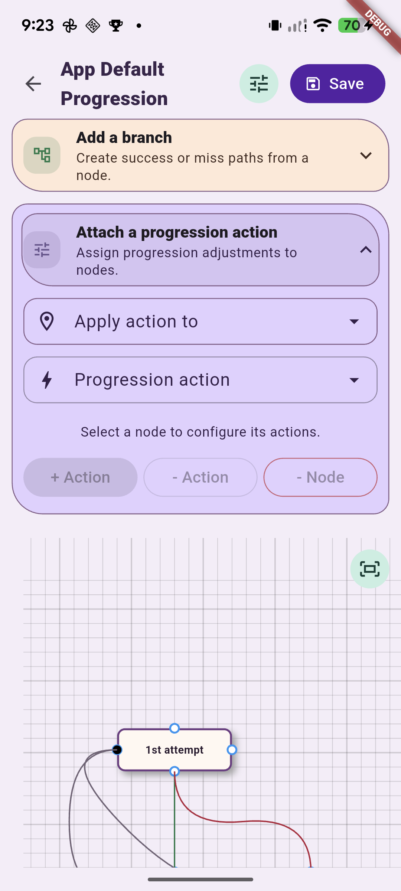
Dark mode


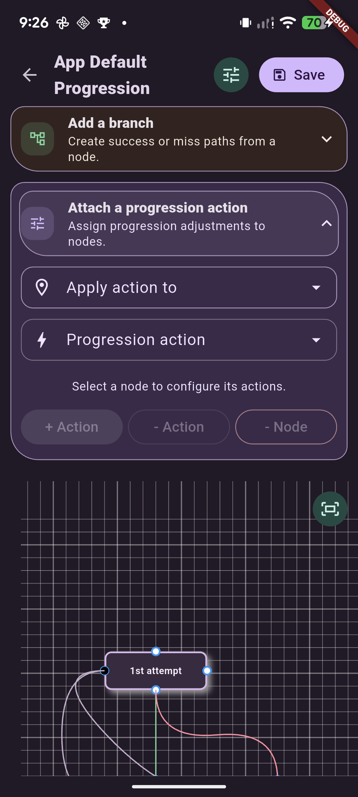
Add a branch
Light mode


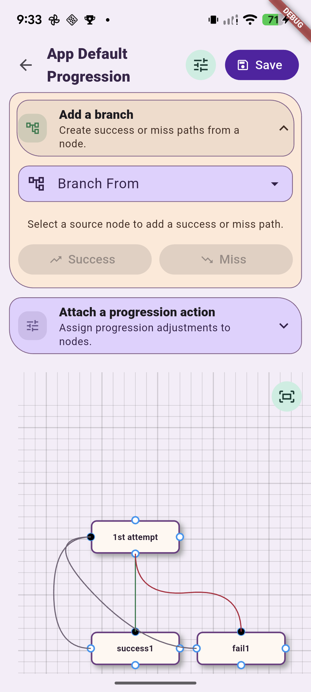
Dark mode


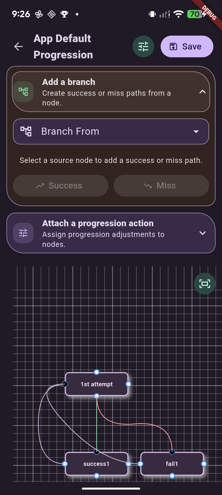
Workout Progress Rules / Flow Methods
Gym profile and plan rules
Light mode


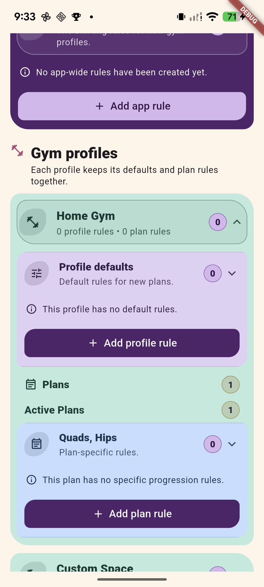
Dark mode


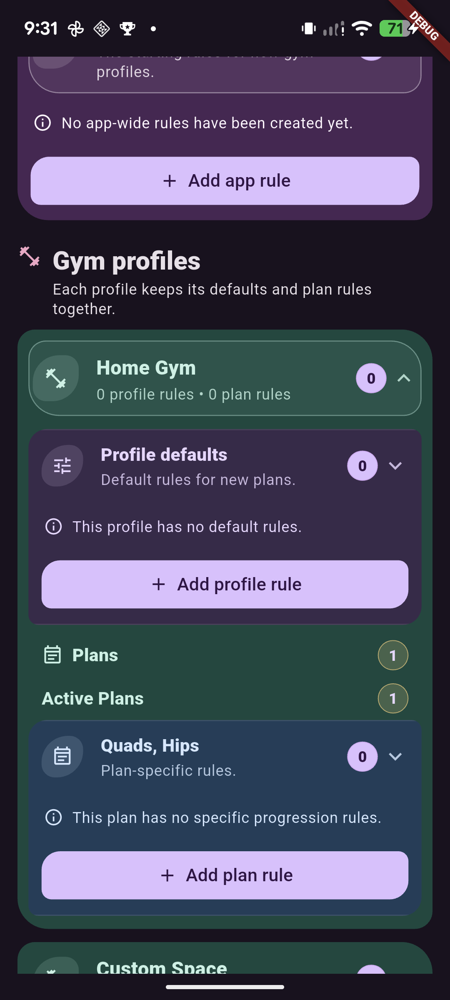
Workout Progress Flows
App and gym profile flows
Light mode


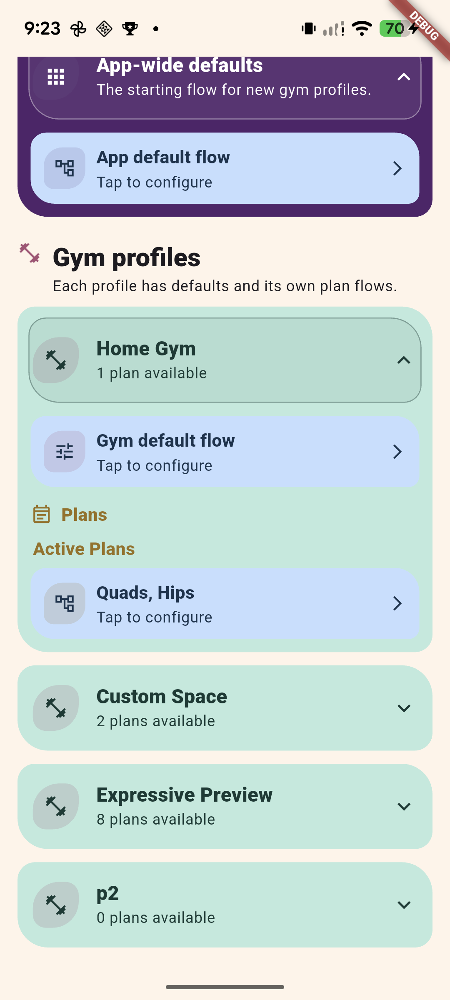
Dark mode


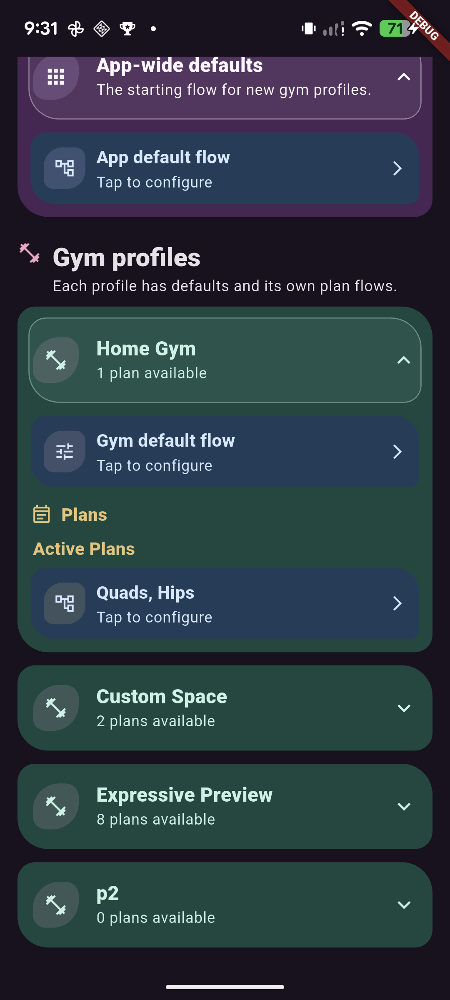
Guided Tutorials
Main tabs category
Light mode


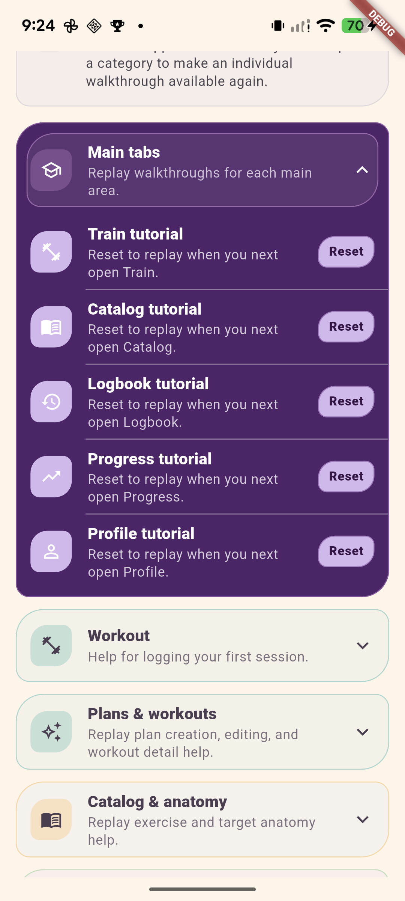
Dark mode


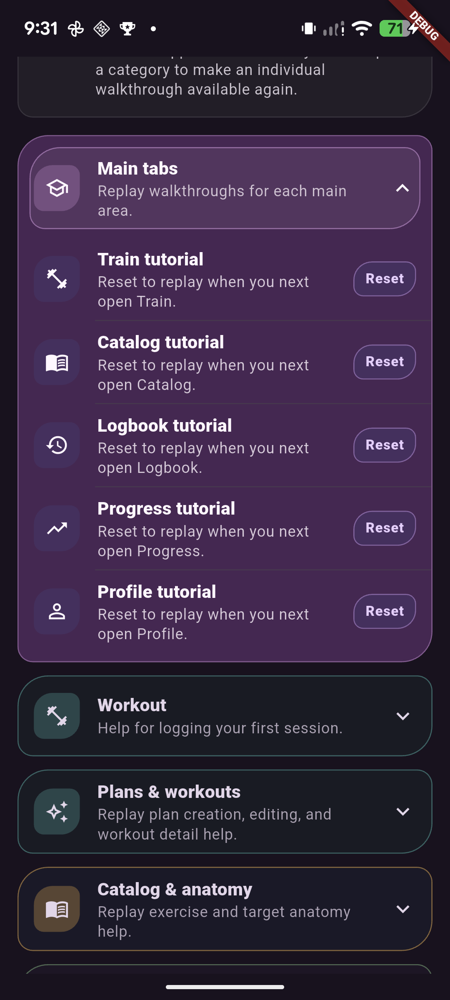
Customize Food / Edit Food
Portion Info
Light mode


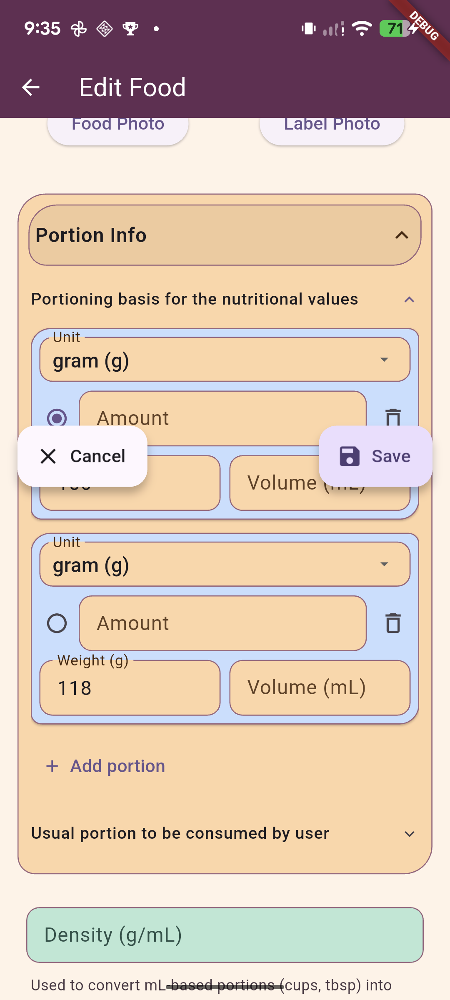
Dark mode


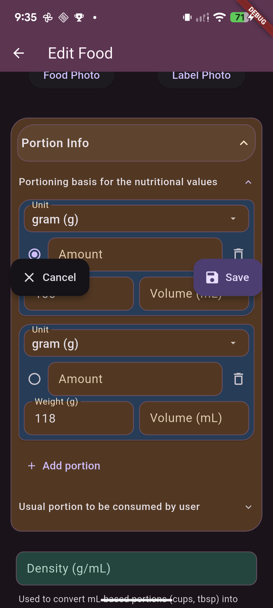
Macronutrients
Light mode


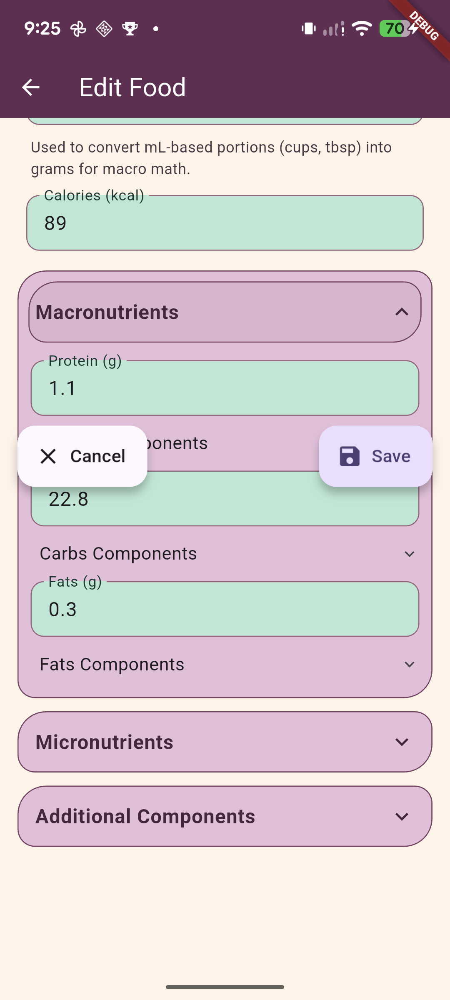
Dark mode


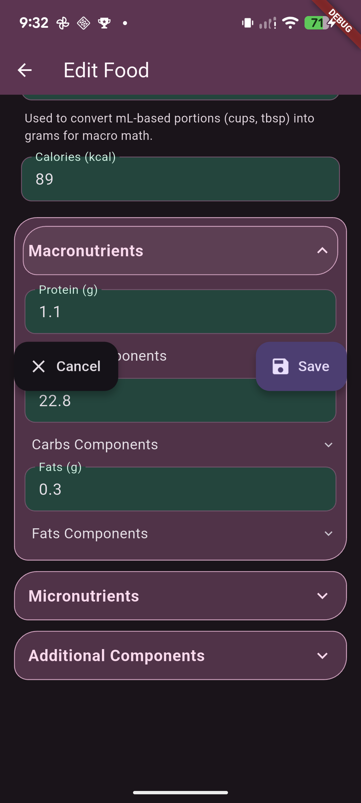
Micronutrients
Light mode


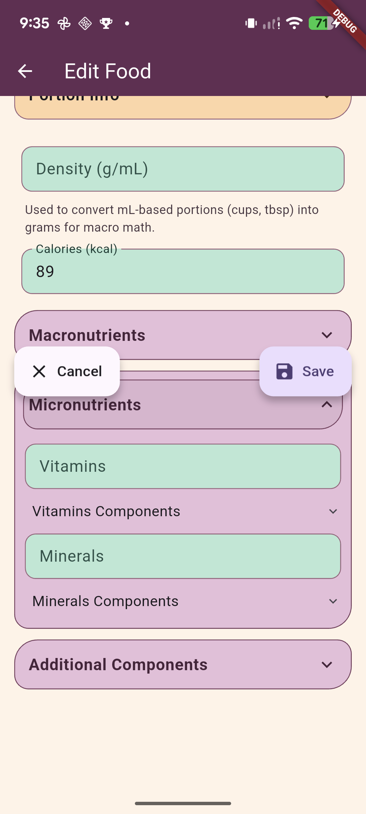
Dark mode


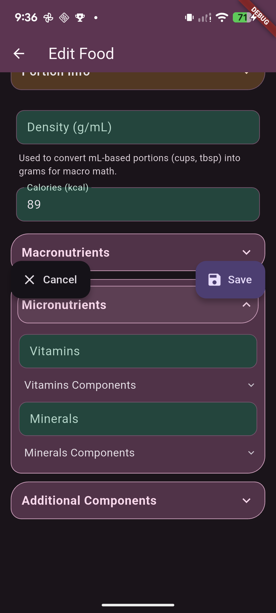
Additional Components
Light mode


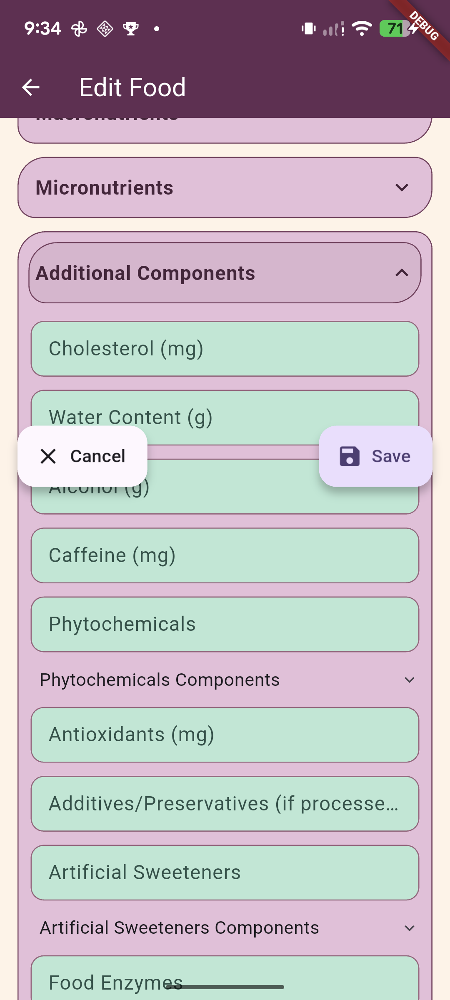
Dark mode


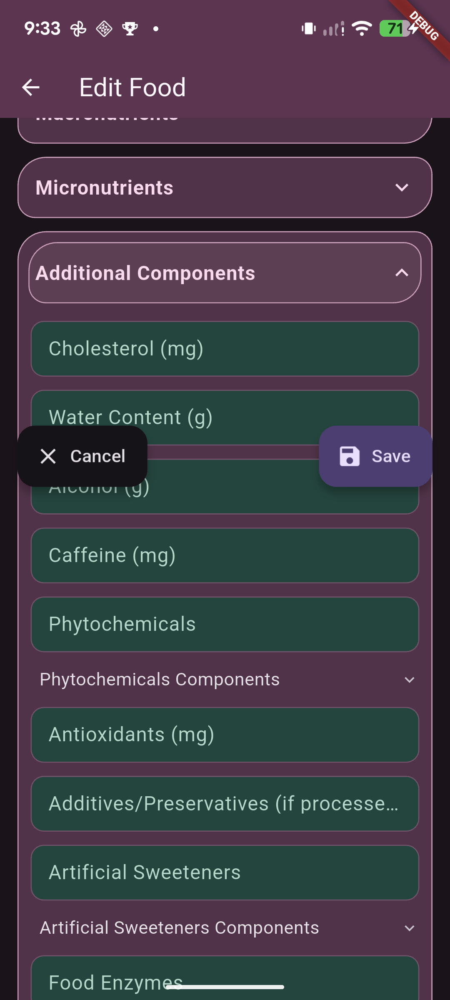
Original baseline captures are preserved. This comparison does not change approval status.